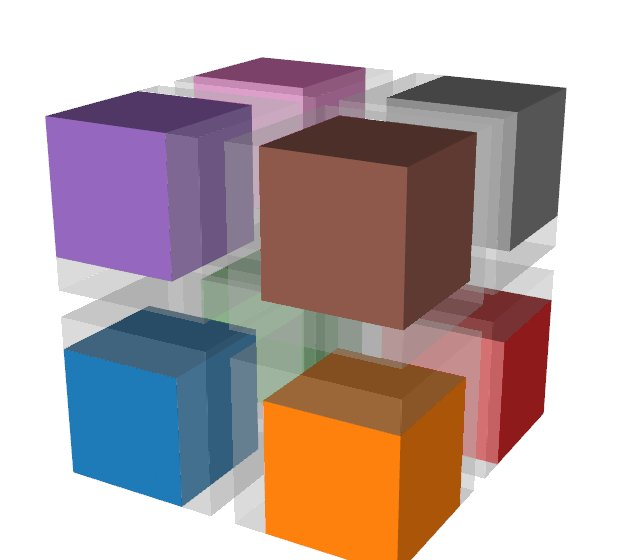
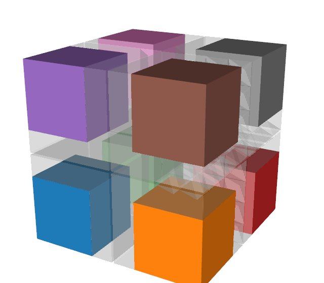

Filters over pieces¶
Data often comes in pieces: a reader's partitions, a simulation's blocks, the share of each GPU or MPI rank. The analysis should still give the whole dataset's results, whether the pieces are on one process or on many ranks. Tack runs filters on each piece and combines the pieces only where an answer needs all of them. The sections below show what changes when filters run on pieces, how to add ghost cells and global ids, which algorithms combine the pieces, and how to merge the pieces back into one dataset.
Tack keeps each piece a whole dataset, and a
PartitionedDataSet holds them, as VTK's
vtkPartitionedDataSet does. Ghost marks say
which cells and points of a piece another piece owns.
Data in pieces explains the container, the marks and
owners, and global ids. This page shows what the algorithms do with them.
import numpy as np
import tack
import tack.dataset as td
tack.set_default_device(arch)
whole = td.wavelet(10) # 21^3 points, 8000 cells
pieces = td.split(whole, 4, ghost_layers=1) # a PartitionedDataSet
# Work on one piece takes the piece: loop over them.
surfaces = []
for piece in pieces:
piece.fields["grad"] = td.gradients(piece, "RTData")
surfaces.append(td.contour(piece, "RTData", 160.0))
surfaces = td.PartitionedDataSet(surfaces)
# Reductions take the pieces and count each cell and point once.
print(td.statistics(pieces, "RTData").n, "points over the pieces,",
whole.num_points, "in the whole")
iso = td.contour(whole, "RTData", 160.0)
assert td.statistics(surfaces, "RTData").n == iso.num_points
9261 points over the pieces, 9261 in the whole
The four pieces hold more points than the grid, since neighbouring pieces share some and each has a layer of its neighbours' cells. Each shared point has one owner, and the reduction counts it there alone.
What changes with pieces¶
Three rules cover every algorithm:
- Work on one piece takes the piece. Filters, analyses and
for_eachtake a dataset, as everywhere else, and you loop over the pieces. There is no wrapper that applies a filter to every piece, because the loop says what it does. - Algorithms whose answer needs every piece take the container. These are
the reductions,
extract_surface,probe, particle tracing, connected regions, the point-cloud algorithms of this page,merge_pieces, and the algorithms that make ghosts and global ids. - Filters carry the ghost marks to what they make, as VTK's filters do. With a layer of ghost cells, the owned part of a filter's output over all pieces is the whole's output, cell for cell and point for point.
The algorithms that take pieces are:
| Task | Algorithm | VTK or Viskores counterpart |
|---|---|---|
| Cut a structured grid into pieces | split |
none |
| Add layers of neighbours' cells | ghost_cells |
vtkGhostCellsGenerator |
| Add neighbours' points to point clouds | ghost_points |
none |
| Refresh ghost values from their owners | update_ghosts |
none |
| Drop a piece's ghost cells | remove_ghosts |
vtkRemoveGhosts; Viskores' GhostCellRemove |
| Number points and cells across pieces | generate_global_ids |
vtkGenerateGlobalIds |
| Merge the pieces into one dataset | merge_pieces |
vtkMergeBlocks; Viskores' MergeDataSets |
| Summarize a field | statistics, entropy |
vtkDescriptiveStatistics; Viskores' Statistics, Entropy |
| The whole's surface | extract_surface |
vtkDataSetSurfaceFilter; Viskores' ExternalFaces |
| Probe at points | probe |
vtkProbeFilter; Viskores' Probe |
| Trace particles | advect, streamlines |
vtkStreamTracer; Viskores' ParticleAdvection, Streamline |
| Label connected regions | connected_components |
vtkConnectivityFilter; Viskores' CellSetConnectivity |
How filters carry ownership¶
Filters process the ghost cells too. What a filter makes takes the owner of what it came from:
| Output | Owner |
|---|---|
| a cell: a contour's triangle, a clip's piece, a kept cell | its source cell's |
| a point a filter keeps | its own |
| a point on an input edge, such as a contour's crossing | the owner of the edge's smallest point |
| a point inside a cell, such as a clip's centroid | the cell's |
| a surface face | the cell it is a side of |
| a face two cells share, an edge, a vertex | the owner of its smallest point |
"Smallest" goes by position, so every piece holding a shared edge decides alike, with no communication. With a ghost layer, the piece that owns a point holds every cell around it, so its filters see what the whole would. That is why each piece's point gradients at its own points are the whole grid's in the first example. The ghost part of the output is what the next filter near a piece's edge needs.
Reduce over the pieces¶
statistics(pieces, name) takes each piece's moments on its own device and
combines them pairwise, in the pieces' global order. entropy(pieces, name,
bins) sums each piece's histogram over the whole's range. Both count only
what each piece owns, so the statistics of the pieces' isosurfaces are the
whole grid's isosurface's.
extract_surface(pieces) gives the whole's surface, a piece each. A piece's
own surface includes the faces it shares with its neighbours, since it cannot
tell them from the boundary. Given the container, the faces two pieces hold
are matched by their points and left out.
Remove the ghosts at the end¶
Before rendering, writing one file, or handing a piece to code that does not know ghost marks, take the ghost output away:
finished = td.PartitionedDataSet(td.remove_ghosts(s) for s in surfaces)
print(sum(s.num_cells for s in finished), "triangles,", iso.num_cells, "in the whole")
remove_ghosts drops the duplicate and hidden cells and the points no
remaining cell uses, as VTK's vtkRemoveGhosts does. The points it keeps
keep their marks, so reductions over the result are unchanged. A point the
piece owns stays even when only ghost cells used it. A structured piece
whose remaining cells form a block stays a structured grid. dataset_to_vtk
keeps the marks too, so pieces with ghosts can go to VTK as they are, and
VTK leaves the ghosts out when it renders.
Pieces without ghost cells¶
Without ghost cells, a piece cannot tell what its neighbours make on the cells, faces and edges they share. A contour point on a shared edge belongs to the owner of the edge's smallest point, and that piece may have no cell holding the edge. Tack does not guess. Such outputs record that they lost their marks, and reductions refuse them:
bare = td.split(whole, 4) # no ghost cells
cut = td.PartitionedDataSet(td.contour(piece, "RTData", 160.0) for piece in bare)
try:
td.statistics(cut, "RTData")
except NotImplementedError as error:
print("refused:", str(error).split(":")[0])
marked = td.generate_global_ids(cut) # owners found by matching points
assert td.statistics(marked, "RTData").n == iso.num_points
surface = td.extract_surface(bare) # the whole's surface, a piece each
generate_global_ids of the outputs marks them. It matches their points by
position, so a point several pieces made belongs to the lowest of them. The
marked outputs then reduce to the whole's. That costs one exchange of the
outputs' points, where ghost cells cost a layer of cells in every piece
before filtering.
What does not depend on neighbours works on pieces without ghost cells as they are:
- reductions of the pieces themselves, and
extract_surfaceof the container; - filters that keep the cells and points:
warp,transform,cylindrical,spherical,shrink,as_polyhedra,as_polygons, andprobe's target; - filters that choose points by their own values:
threshold_points,extract_points,mask_points.
Add ghost cells¶
split(data, n, ghost_layers=1) cuts a structured grid and adds the layer
itself. Pieces from elsewhere, such as a partitioner, a reader or VTK's
redistribution, get one from ghost_cells, as VTK's vtkGhostCellsGenerator
would give them:
# Unstructured pieces without ghost cells, as a partitioner or a reader gives them.
plain = td.PartitionedDataSet(td.tetrahedralize(piece) for piece in bare)
ghosted = td.ghost_cells(plain) # one layer of neighbours' cells
deeper = td.ghost_cells(plain, layers=2) # two, for two neighbour filters in a row
Pieces neighbour where they share points at exactly the same position.
tolerance= matches points a little apart, for pieces whose copies of a
shared point differ in their last bits. A shared point belongs to the lowest
piece holding it. ghost_cells takes unstructured, polyhedral or structured
pieces, all of one kind. Structured pieces stay structured, each its block
grown by the layers. as_polyhedra makes shaped pieces polyhedral, for a
reader that gives both kinds.
-

An image, split into eight structured blocks
-
Tetrahedra, extracted by octant
-

Hexahedra, wedges and pyramids, extracted by octant
Each mesh of a unit cube is cut into eight pieces, one an octant, and
ghost_cells gives each piece one layer. The pieces are drawn pulled apart.
A piece's own cells have its color, and its ghost cells are faint, reaching
into the pieces around it.
A filter that needs each entity's neighbours is right on what a piece owns, but wrong on the rim of the ghost layer, whose neighbours the piece lacks. Before a second such filter reads those values, copy them from their owners:
for piece in ghosted:
piece.fields["c"] = td.values_at_centers(piece, "RTData") # a cell field
piece.fields["p"] = td.project(piece, "c", td.H1(piece)) # back to points
td.update_ghosts(ghosted, "p") # the rim's values from their owners
for piece in ghosted:
piece.fields["grad_p"] = td.gradients(piece, "p", at="points") # right where owned
ghost_cells keeps its exchanges, so each update_ghosts is one copy per
neighbour, not a new matching. Two layers (layers=2) avoid the refresh for
two neighbour filters in a row, at the cost of more cells.
Number points and cells across pieces¶
Each piece numbers its points and cells from 0.
Global ids number them across all the pieces,
the same id wherever a point or cell is held. VTK's GlobalIds arrays
become them, and generate_global_ids makes them, as vtkGenerateGlobalIds
does:
numbered = td.generate_global_ids(ghosted)
ids = numbered[0].global_ids.points # i64, the same at a shared point
piece.global_ids.points and .cells are i64 arrays. Filters keep the
ids of the points and cells they keep, such as threshold, extract_cells
and remove_ghosts. What they make has none. With global ids on every
piece, ghost_cells matches points by id rather than position, and
connected_components numbers regions as on the whole dataset.
Probe, trace and label across pieces¶
Three algorithms follow points or regions from piece to piece:
rng = np.random.default_rng(0)
points = rng.uniform(-9.0, 9.0, (200, 3))
probed = td.probe(pieces, points) # each point from the piece holding it
regions = td.connected_components(pieces) # one number per region, across pieces
seeds = rng.uniform(-5.0, 5.0, (20, 3))
paths = td.streamlines(pieces, "grad", seeds, 0.002, 100) # each piece's stretches
probe(pieces, points)evaluates each point in the piece one of whose own cells holds it, and returns the values in your points' order. The values equal those of probing the whole. Ghost cells are not needed.advectandstreamlineshand particles from piece to piece. With a ghost layer wider than a step, the paths are the whole mesh's up to rounding. A particle that ends a step in a ghost cell goes to the cell's owner. Without ghost cells it crosses at the boundary by a shortened step. Each piece ofstreamlines' result holds the stretches it traced, and each stretch after the first starts at a point marked as a duplicate.connected_components(pieces)labels cells connected through shared points, numbering each region once across all the pieces.
Point clouds in pieces¶
A point cloud's pieces share no points, so a filter over a point's
neighbours needs copies of the nearby points other pieces hold.
ghost_points appends them, marked as ghosts: every point within radius of
the piece, or exactly those among its owned points' k nearest. The
neighbour filters of Points and particles then run
per piece, and each owned point gets the whole's answer. Clustering,
statistical outliers, voxel downsampling, deposits and halo catalogues need
every piece, so they take the container:
import numpy as np
import tack
import tack.dataset as td
tack.set_default_device("cpu")
# Clumps in a periodic box, and the same cloud cut into four pieces.
rng = np.random.default_rng(4)
box = 10.0
x = np.concatenate([c + rng.normal(0.0, 0.3, (400, 3)) for c in rng.uniform(1, 9, (12, 3))]
+ [rng.uniform(0.0, box, (2000, 3))]) % box
x = x.astype(np.float32)
whole = td.point_cloud(x, origin=(0.0, 0.0, 0.0))
parts = np.array_split(x, 4)
pieces = td.PartitionedDataSet([td.point_cloud(part, origin=(0.0, 0.0, 0.0))
for part in parts])
# Per piece, after copying in each owned point's 10 nearest from elsewhere.
ghosted = td.ghost_points(pieces, k=10)
normals = np.concatenate([td.point_normals(piece, k=10).fields["normals"].values.numpy()
[:len(own)] for piece, own in zip(ghosted, parts)])
expected = td.point_normals(whole, k=10).fields["normals"].values.numpy()
assert np.abs(normals - expected).max() < 1e-3
# Over the pieces: the whole's clusters, numbered as the whole numbers them.
groups = td.connected_components(pieces, radius=0.15, min_size=50, periodic=box)
labels = np.concatenate([p.fields["point_region"].values.numpy() for p in groups])
assert np.array_equal(labels, td.connected_components(
whole, radius=0.15, min_size=50, periodic=box).fields["point_region"].values.numpy())
print(labels.max() + 1, "clusters")
A piece's own points come first in ghost_points' result, in their order,
which is why [:len(own)] picks them. After a filter that is right only on
a piece's own points, update_ghosts brings the copies' values from their
owners: SPH densities before an interpolation that reads them, for
instance. deposit of pieces gives every rank the whole grid, and
halo_catalog of pieces a catalogue piece per piece. In a periodic box the
copies across a face are images, moved by the box's side, so run per-piece
filters on ghost_points' result without periodic.
Merge the pieces into one dataset¶
merge_pieces gives the pieces back as one dataset, each cell and point
once, ghosts dropped: to write one file, or for code that knows no pieces.
one = td.merge_pieces(pieces) # None on the other ranks
print(type(one.topology).__name__, one.num_cells, "cells")
StructuredTopology 8000 cells
Structured pieces that tile a box come back as one structured grid. Others
give an unstructured dataset, numbered as generate_global_ids numbers it.
Across MPI ranks the result is on the root rank, root=0 by default, and
None elsewhere.
Pieces from VTK¶
vtk_to_dataset turns a vtkPartitionedDataSet into a PartitionedDataSet,
and dataset_to_vtk turns it back. VTK's filters cut an unstructured mesh
with ghost cells, with no MPI needed:
from vtkmodules.vtkFiltersParallelDIY2 import (
vtkGhostCellsGenerator,
vtkRedistributeDataSetFilter,
)
from vtkmodules.vtkImagingCore import vtkRTAnalyticSource
import tack
import tack.dataset as td
from tack.interop.vtk import vtk_to_dataset
tack.set_default_device("cpu")
mesh = vtkRTAnalyticSource(whole_extent=(-10, 10, -10, 10, -10, 10))()
cut = (vtkRedistributeDataSetFilter(number_of_partitions=4,
preserve_partitions_in_output=True)
>> vtkGhostCellsGenerator(number_of_ghost_layers=1, build_if_required=False))
pieces = vtk_to_dataset(cut(mesh)) # four unstructured pieces, marked
assert td.statistics(pieces, "RTData").n == mesh.number_of_points
VTK covers the conversions in full.
Pieces on several devices¶
A piece is a dataset, so it can live on any device, and each piece's work runs where the piece is. Reductions reduce each piece on its own device:
# Spread the pieces over the GPUs there are, or keep them on the CPU.
gpus = [tack.device(f"cuda:{i}") for i in range(tack.device_count("cuda"))]
devices = gpus or [tack.device("cpu")]
spread = td.PartitionedDataSet(piece.to_device(devices[i % len(devices)])
for i, piece in enumerate(pieces))
print(td.statistics(spread, "RTData").mean) # each piece reduced where it is
Data on devices explains where a dataset lives and how
to_device moves it.
Across MPI ranks¶
Over MPI, each rank holds its own pieces, and the container's
world says where the others are. A world is a
tack.communication.World, made from an mpi4py communicator or, without
one, for this process alone. The algorithms that take the container then
communicate. The per-piece loops do not change:
from tack import communication as tc
try:
from mpi4py import MPI
world = tc.World(MPI.COMM_WORLD) # under mpiexec: every rank
except ImportError:
world = tc.World() # this process alone
every = td.split(whole, 8, ghost_layers=1) # or each rank reads its own
mine = td.PartitionedDataSet([every[i] for i in range(world.rank, 8, world.size)], world)
print(td.statistics(mine, "RTData").mean) # over all eight pieces, on every rank
mpiexec -n 4 python script.py
The same script runs in one process and on many ranks. Tack imports no MPI
module: you make the communicator, and mpi4py must be built against your MPI
(uv sync --extra mpi). Results that sum over pieces add in the pieces'
global order, so they have the same bits however the pieces are shared out.
With an MPI that reads device memory, tc.World(comm, gpu_aware=True) sends
device arrays without staging them through the host. Make the rank's device
(tack.device("cuda:N")) before importing mpi4py.MPI, which starts MPI.
MPI covers worlds and transports, and every
algorithm here is written on the communication layer,
so one of your own can be too.
Details¶
Hidden cells. Filters never process cells marked hidden, since their data
are not valid there. Every filter that makes cells or points leaves them out,
and so do probe, advect and streamlines in their source dataset.
Algorithms whose output is on the same cells, such as gradients and
projections, still compute there, and the marks stay. Faces or edges chosen
by id and a reused CellLocator are refused on data with hidden cells.
Fields the marks cannot place. An L2 field goes by its cells' marks.
A field on faces or edges, or of order 2, is refused by reductions on a
dataset with marks, since who owns those values is not decided yet.
Not here yet. Rebalancing pieces and asynchronous exchange are not planned for now.
Where to go next¶
- Data in pieces explains the container, owners and marks behind this page.
- Write a filter shows how a filter of your own carries the marks.
- The communication layer is what these algorithms are written on.